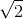
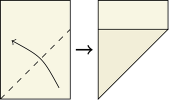
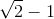
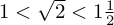
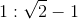
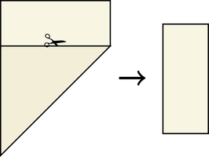
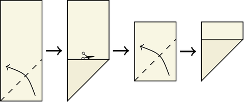
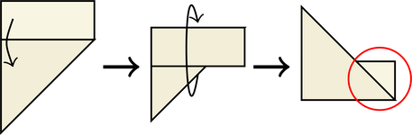
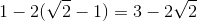

approximation by folds only. Maybe by unfolding and using creases? At that point you're basically doing compass and straightedge work.
approximation by folds only. Maybe by unfolding and using creases? At that point you're basically doing compass and straightedge work.This is a cute little mathematical trick I came up with in my 1st year of undergrad. By simply folding a sheet of A4 paper a certain way you can find an upper and lower bound for the square root of two.
[[MORE]]The core of this trick depends on a special property of the A paper standard. The long side of an A-type sheet of paper is exactly  times the length of the short side. This is so when you cut it in half you get two smaller sheets with the same ratio as the original.

Already we have a good, albeit empirical, lower bound for :

Now for our upper bound. First, we fold the short side so it lies flush with the long side, making a crease that goes diagonally.
Then using the short edge as a guide, fold the leftovers and flip the whole thing over.

We're interested in the small isosceles right triangle formed by the leftover section, circled in red. The opposite and adjacent sides are both length  and since it is a right triangle we can calculate the area to be:

Since we know the triangle exists (citation: we can touch it) this must mean its area is greater than zero. Rearranging the inequality gives us our upper bound:

Displayed together on one line our inequalities are:
Obviously this isn't the "correct" way to compute , for that you'd use newton's method or a faster converging series. What's interesting is the bounds we got are the first two approximations newton's method gives with the initial guess of 1, though this is likely a coincidence. To me this suggests there are more complicated folds that yield smaller—but demonstrably positive area—triangles that you can use the greater than 0 trick on to obtain greater accuracy. Unfortunately I've had no luck in finding such folds. Email me if you think of a way!
Now you know a really cool party trick to show all your friends, assuming they like math. If they don't like math you can say you're building the worst paper airplane ever.
Update: A few hours after positing this I had a eureka moment. You can in fact create arbitrarily good upper bounds for with an A series sheet of paper.
To go further you need to get a pair of scissors and slice off that leftover bit. Once we do that we'll have a section whose edge ratios are .
Next we iteratively cut squares off the section until you can't do it anymore.
Then we fold back the section's leftover and find our triangle.
The side lengths of this triangle is given by . Its area can be used to construct another upper bound:
Which is what newtons method will give us after three iterations. Continuing this method is as simple as trimming off the leftover and starting again. I'm pretty confident at this point that the paper trick is just a physical implementation of newton's method for square roots.
This is bit beyond a party trick now, because once you break out the scissors people are bound to leave. I really wish there was a way to get the approximation by folds only. Maybe by unfolding and using creases? At that point you're basically doing compass and straightedge work.
If you have any neat ideas pertaining to newton's method and paper folding email me at the reverse of moc.irom-elkcalb@ellebasi. Bye for now!